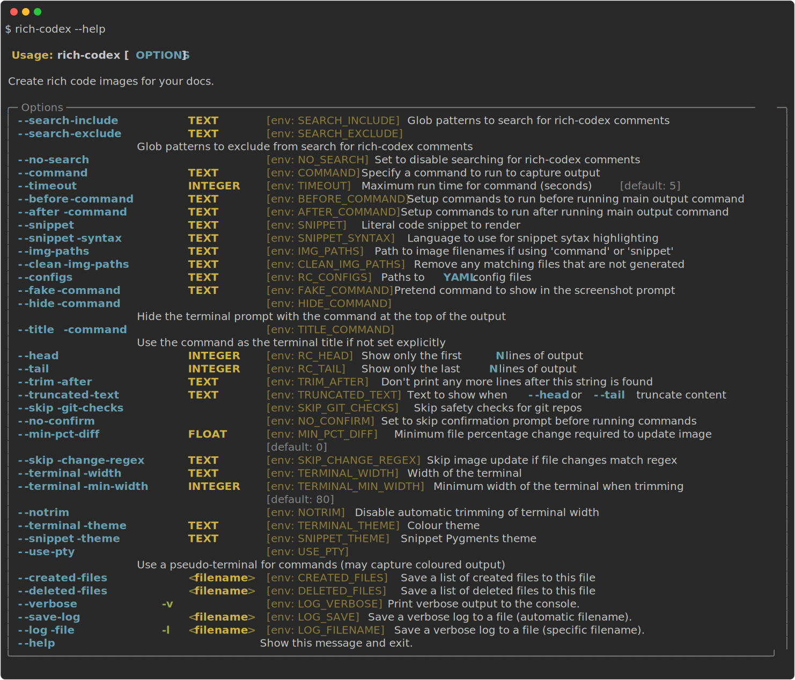
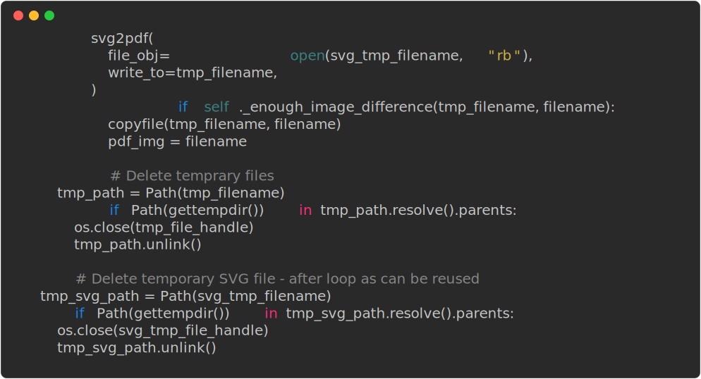
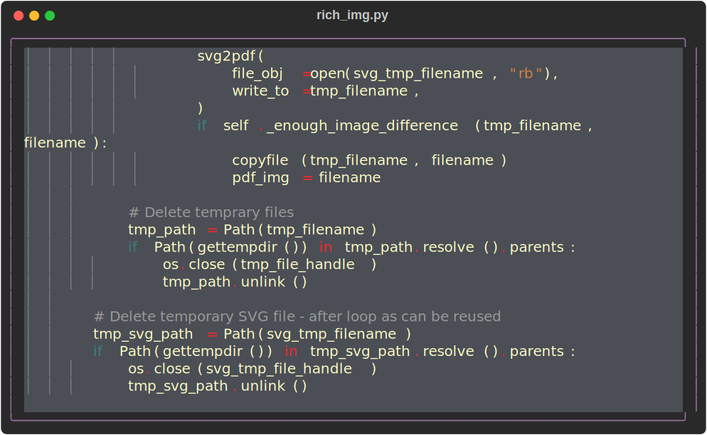

Markdown
Running commands
If you write markdown with images that contain just a backtick command as the alt-text, rich-codex will find them.
For example, the following markdown will generate ../img/rich-codex-help.svg (the image shown above) based on the output of the command rich-codex --help:

Printing files
Rich-codex bundles rich-cli for convenience, so you can easily produce screenshots of files with the rich command:
Tip
You probably want to hide the command with hide_command - see below for more about configuration.
<!-- RICH-CODEX hide_command: true -->


Tip
💡 Use the --force-terminal flag to keep colours in your screenshots
Title text
You can also add markdown image title text in quotes after the filename, which will be used in the top menu bar of the screenshot terminal. (Alternatively, set the title config option in a comment).
This can be useful when adding lots of command markup to get a good screenshot. You might also want to hide the command prompt. For example:
You don't always want people to see the exact command you used, after all.
<!-- RICH-CODEX hide_command: true -->


Config comments
You can use a HTML comment in a line above the image to set config attributes for this image only.
The comment should begin with RICH-CODEX and then have valid YAML after that.
The parsed configuration will be validated - see an overview of available variables on the config overview docs.
For example:
<!-- RICH-CODEX {terminal_width: 60, terminal_theme: MONOKAI} -->


Code snippets
In addition to running commands, you can format code blocks or "snippets".
To do this, make the <!-- RICH-CODEX code comment config with the snippet key.
Remember that you can use the pipe character | in YAML to have multi-line strings, but you need to be careful with indentation to maintain valid YAML. I'd recommend you write the YAML in a code editor with syntax highlighting and then paste it in.
Info
The alt-text for the markdown image embed doesn't matter for snippets. However, if it has a command in backticks then this will take priority over the snippet.
If the snippet is valid JSON, it will be pretty-printed and coloured. Otherwise text will default to white.
<!-- RICH-CODEX
snippet: |
{"menu": {
"id": "file", "value": "File",
"popup": {
"menuitem": [
{"value": "New", "onclick": "CreateNewDoc()"},
{"value": "Open", "onclick": "OpenDoc()"},
{"value": "Close", "onclick": "CloseDoc()"}
]
}
}}
-->

For other code languages, use snippet_syntax to define which language to format in. For example:
<!-- RICH-CODEX
snippet_syntax: python
snippet: |
>>> print("[italic red]Hello[/italic red] World!", locals())
Hello World!
{
'__annotations__': {},
'__builtins__': <module 'builtins' (built-in)>,
'__doc__': None,
'__loader__': <class '_frozen_importlib.BuiltinImporter'>,
'__name__': '__main__',
'__package__': None,
'__spec__': None,
'print': <function print at 0x1027fd4c0>,
}
-->